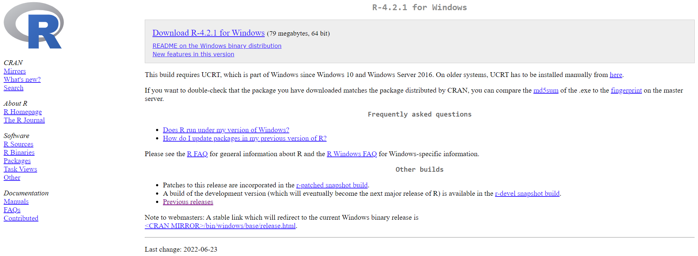
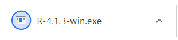
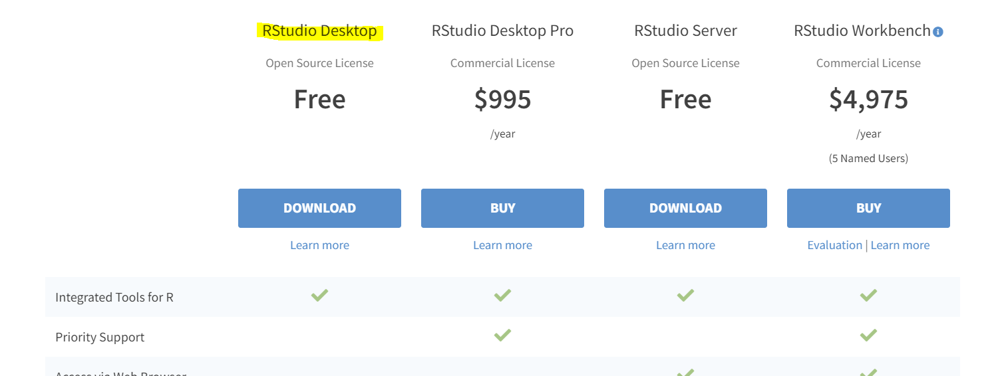

3 Setup
3.1 Install R
Before you do anything, you’ll need to download R. This download will allow your computer to interpret the R code you write later on.
Download R From R: The R Project for Statistical Computing
Select ‘download R’

- Choose any link but preferably the one closest to your physical location

- Choose your operating system

- Press ‘Install R for the first time’

- Press ‘download’

- Open installer

- Follow the prompts and leave all options set as their default values

3.2 Install R Studio
After you install R, you’ll need an environment to write and run your code in. Most people use a program called “R Studio” for this. To download R Studio follow the steps listed below:
Navigate to the R Studio download site: Download the RStudio IDE
Press the ‘download’ button under RStudio Desktop

- Choose the download option for your operating system

- Open the installer and accept all defaults